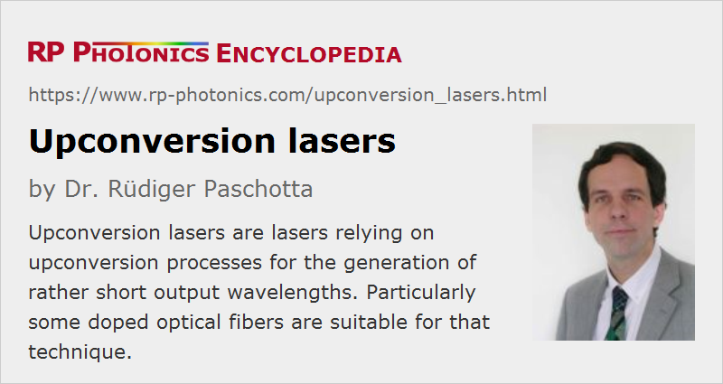

Upconversion Lasers
Definition: lasers relying on upconversion processes
More general terms: lasers
German: Upconversion-Laser
How to cite the article; suggest additional literature
Author: Dr. Rüdiger Paschotta
For most lasers, the laser wavelength is longer than the pump wavelength. This is unavoidable for all pumping schemes where one pump photon can generate one laser photon. However, there are upconversion pumping schemes, where two or more pump photons are used to transfer a laser ion to a highly excited level, so that the laser photon energy can be larger than that of the pump source. For example, there are visible lasers pumped with infrared light. (Sometimes, the label upconversion laser is used when the pumping process involves multiple photons, even when the laser wavelength is not shorter than the pump wavelength.)
Early upconversion lasers were demonstrated with bulk crystals, which often had to be cooled to very low temperatures, making the systems impractical. However, significant advances have been achieved e.g. with Er:YLiF4 and Er:LiLuF4 crystals, generating relatively high-power green light [2, 14, 15] at room temperature.
Most currently used upconversion lasers are based on glass fibers, where high pump intensities can be maintained over long lengths, so that the laser threshold can be reached even under otherwise difficult conditions. In most cases, silica glass is unsuitable due to its high phonon energies, which cause strong multi-phonon transitions and thus lead to too short metastable level lifetimes. Therefore, it is often necessary to use heavy-metal fluoride glasses (e.g. ZBLAN), which tend to be fragile and expensive.
Specific examples of upconversion fiber lasers are:
- thulium-doped blue upconversion lasers [5, 11, 12], pumped e.g. around 1120–1140 nm and emitting around 480 nm
- erbium-doped green upconversion lasers [1, 4], pumped e.g. around 980 nm and lasing around 546 nm
- praseodymium/ytterbium-doped upconversion lasers [7, 8], pumped e.g. around 850 nm (using an avalanche process) or via ytterbium as sensitizer, and emitting at one of various visible wavelengths in the red (635 nm), orange (605 nm), green (520 nm), or blue (491 nm) spectral region
Alternative methods for obtaining shorter laser wavelengths are often based on nonlinear frequency conversion.
Questions and Comments from Users
Here you can submit questions and comments. As far as they get accepted by the author, they will appear above this paragraph together with the author’s answer. The author will decide on acceptance based on certain criteria. Essentially, the issue must be of sufficiently broad interest.
Please do not enter personal data here; we would otherwise delete it soon. (See also our privacy declaration.) If you wish to receive personal feedback or consultancy from the author, please contact him e.g. via e-mail.
By submitting the information, you give your consent to the potential publication of your inputs on our website according to our rules. (If you later retract your consent, we will delete those inputs.) As your inputs are first reviewed by the author, they may be published with some delay.
Bibliography
| [1] | A. J. Silversmith et al., “Green infrared-pumped erbium upconversion laser”, Appl. Phys. Lett. 51, 1977 (1987), doi:10.1063/1.98316 |
| [2] | T. Hebert et al., “Blue and green CW upconversion lasing in Er:YLiF4”, Appl. Phys. Lett. 57, 1727 (1990), doi:10.1063/1.104048 |
| [3] | R. B. Smart et al., “CW room temperature upconversion lasing at blue, green and red wavelengths in infrared-pumped Pr3+-doped fluoride fibre”, Electron. Lett. 27 (14), 1307 (1991), doi:10.1049/el:19910817 |
| [4] | T. J. Whitley et al., “Upconversion pumped green lasing in erbium doped fluorozirconate fibre”, Electron. Lett. 27 (20), 1785 (1991), doi:10.1049/el:19911110 |
| [5] | S. G. Grubb et al., “CW room-temperature blue upconversion fibre laser”, Electron. Lett. 28, 1243 (1992), doi:10.1049/el:19920785 |
| [6] | T. Hebert et al., “Blue continuous-pumped upconversion lasing in Tm:YLF”, Appl. Phys. Lett. 60, 2592 (1992), doi:10.1063/1.106919 |
| [7] | A. C. Tropper et al., “Analysis of blue and red laser performance of the infrared-pumped praseodymium-doped fluoride fiber laser”, J. Opt. Soc. Am. B 11 (5), 886 (1994), doi:10.1364/JOSAB.11.000886 |
| [8] | P. Xie and T. R. Gosnell, “Room-temperature upconversion fiber laser tunable in the red, orange, green, and blue spectral regions”, Opt. Lett. 20 (9), 1014 (1995), doi:10.1364/OL.20.001014 |
| [9] | P. R. Barber et al., “IR-induced photodarkening in Tm-doped fluoride fibres”, Opt. Lett. 20 (21), 2195 (1995), doi:10.1364/OL.20.002195 |
| [10] | H. M. Pask et al., “A Pr3+-doped ZBLAN fibre upconversion laser pumped by an Yb3+-doped silica fibre laser”, Opt. Commun. 134 (1-6), 139 (1997), doi:10.1016/S0030-4018(96)00549-4 |
| [11] | R. Paschotta et al., “Characterization and modeling of thulium:ZBLAN blue upconversion fiber lasers”, J. Opt. Soc. Am. B 14 (5), 1213 (1997), doi:10.1364/JOSAB.14.001213 |
| [12] | R. Paschotta et al., “230 mW of blue light from a Tm-doped upconversion fibre laser”, J. Sel. Top. Quantum Electron. 3 (4), 1100 (1997), doi:10.1109/2944.649548 |
| [13] | H. Zellmer et al., “Visible double-clad upconversion fibre laser”, Electron. Lett. 34, 565 (1998), doi:10.1049/el:19980415 |
| [14] | H. Scheife et al., “Advances in up-conversion lasers based on Er3+ and Pr3+”, Opt. Mater. 26 (4), 365 (2004), doi:10.1016/j.optmat.2003.10.010 |
| [15] | E. Heumann et al., “Semiconductor-laser-pumped high-power upconversion laser”, Appl. Phys. Lett. 88, 061108 (2006), doi:10.1063/1.2172293 |
| [16] | R. Paschotta, case study on a thulium-doped upconversion laser |
See also: upconversion, fiber lasers, multi-phonon transitions, metastable states, fluoride fibers, nonlinear frequency conversion
and other articles in the category lasers
|  |
If you like this page, please share the link with your friends and colleagues, e.g. via social media:
These sharing buttons are implemented in a privacy-friendly way!